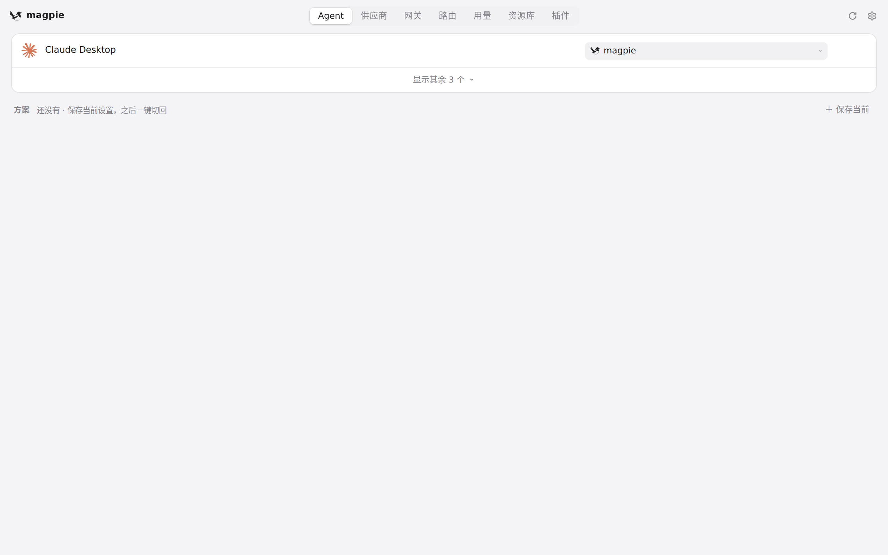
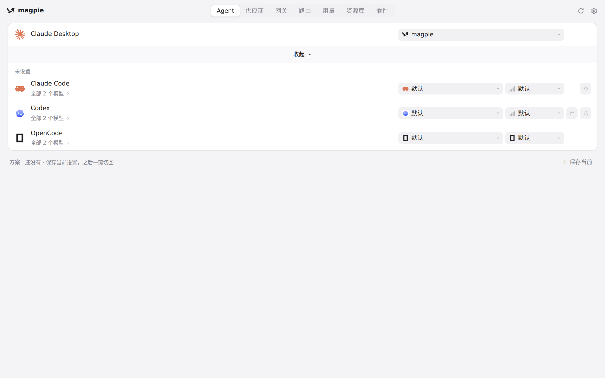
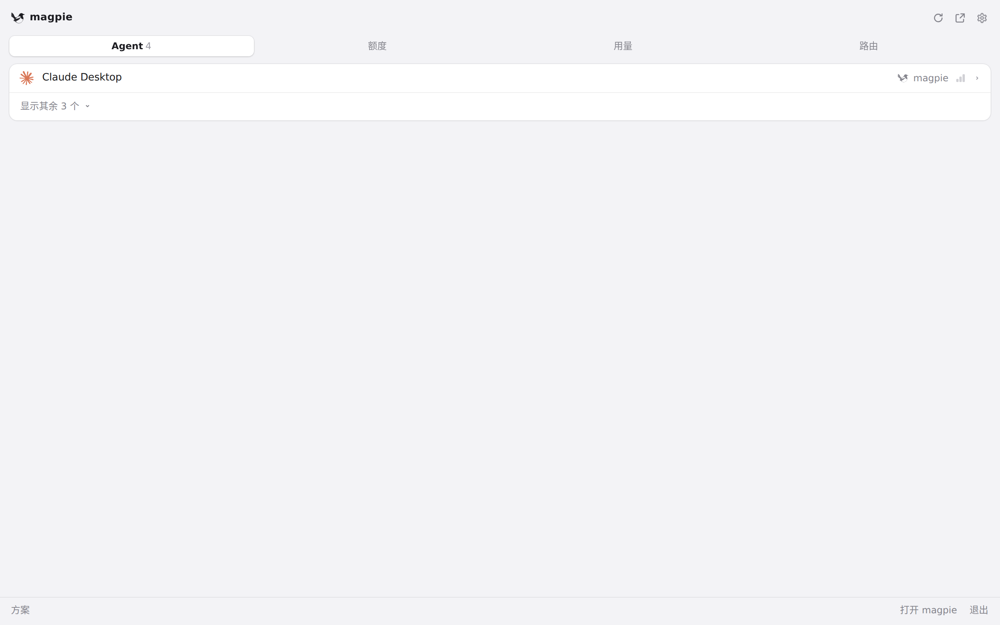
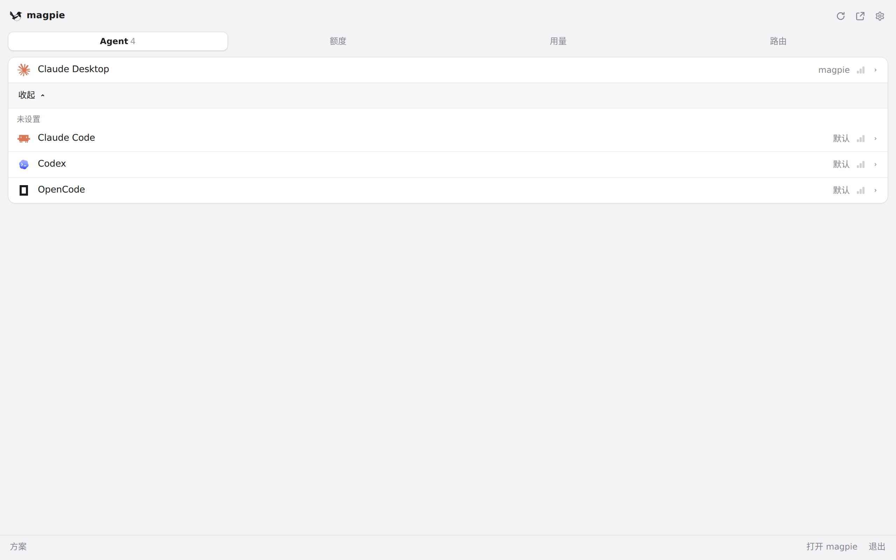

#427 界面预览
commit e8c00d9 · 回到 PR · 该 diff 在 magpie 的 Agent 注册表里新增了 Reasonix Studio（id=reasonix）：检测到 Studio 2.x 桌面安装或原生 2.x CLI 时，Agent 列表与菜单栏面板会多出一行（官方图标），可经 magpie 网关选择模型、设置 reasoning effort，并往 Studio 的 config.toml/.env 写入 magpie 供应商。其余改动（edit 包的 TOML 写入工具、检测/回滚逻辑、测试与 README）不出现在界面上。
红线是鼠标走过的轨迹，红色圆环是一次点击；底部文字是这一步在做什么。空格暂停，← → 逐段查看。

Agent 列表中的 Reasonix Studio 入口 · Agent 页的列表

Agent 列表中的 Reasonix Studio 入口 · 展开后的 Agent 列表

菜单栏面板的 Agent 列表 · 菜单栏快速面板的 Agent 标签

菜单栏面板的 Agent 列表 · 菜单栏面板展开后的 Agent 列表